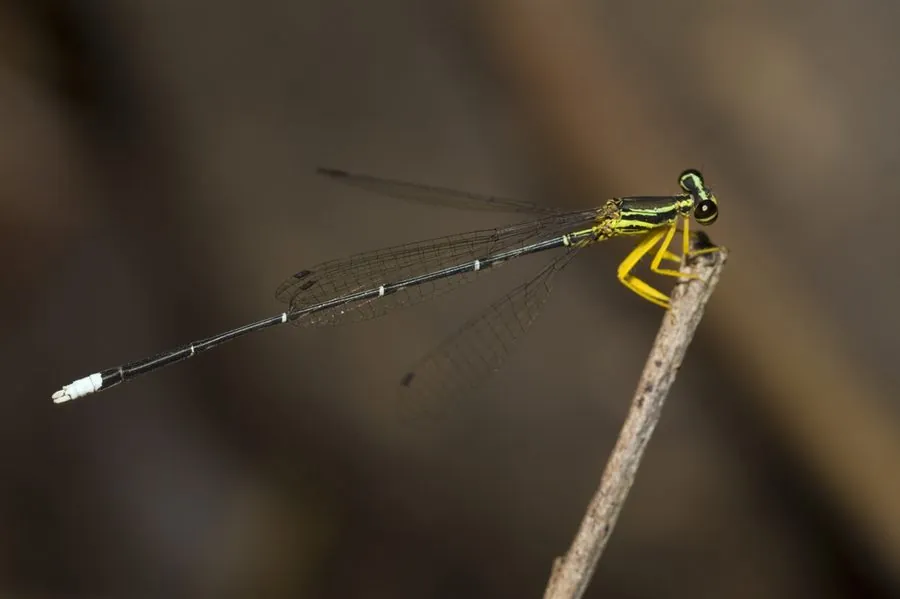

昆虫 · 动物界
黄狭扇蟌 Copera marginipes

体细长、足黄色且胫节膨大的小型蟌类，栖息于池塘、沟渠与缓流，雄虫足部白色扇状，稚虫水生捕食小虫。
- 分类
- 门节肢动物门纲昆虫纲目蜻蜓目科扇蟌科属狭扇蟌属
- 栖息环境
- 池塘、沟渠、水田、缓流溪和湿地草丛
- 地理分布
- 中国南方，以及南亚和东南亚
- 保护级别
- 尚无保护级别；水质恶化会使其数量减少
物种志
黄狭扇蟌的体长约三至四厘米，体形纤细，体色黄褐至黑褐，胸部有黑色的纵条纹，腹部细长，各节交界处有淡色环。它最显著的特征是足，腿节与胫节呈鲜明的黄色，雄虫中足和后足的胫节膨大成扁平的白色扇状，扇蟌之名由此而来，雌虫的胫节膨大不明显。它的翅透明，翅痣细长，停歇时双翅合拢在背上。
它分布于中国南方、南亚和东南亚，栖息在池塘、沟渠、水田、缓流溪和湿地草丛，成虫常停歇在水面的浮叶、草茎或岸边石头上，飞行轻弱，捕食蚊、蠓等小型昆虫。它属于半变态昆虫，卵产在水生植物或水边湿土中，稚虫水生，靠直肠鳃呼吸，捕食水生昆虫幼虫和甲壳类，羽化时爬出水面。它一年发生一代，成虫多见于夏秋。它尚无保护级别，是南方湿地和农田水渠中常见的蟌类，水质恶化会使其数量减少。
形态与习性
- 体长约三至四厘米，体形纤细
- 足鲜明的黄色，雄虫胫节呈白色扇状
- 胸部黄褐色，有黑色纵条纹
- 变态半变态，稚虫水生，用直肠鳃呼吸
- 食性捕食蚊、蠓等小型昆虫
- 发生世代一年一代，成虫多见于夏秋
趣味知识
- 雄虫的中足和后足像举着两片小白扇，求偶时会张开晃动。
- 它飞得很轻，常贴着水面从一片浮叶跳到另一片。
- 它的稚虫住在水里，靠直肠里的鳃呼吸。